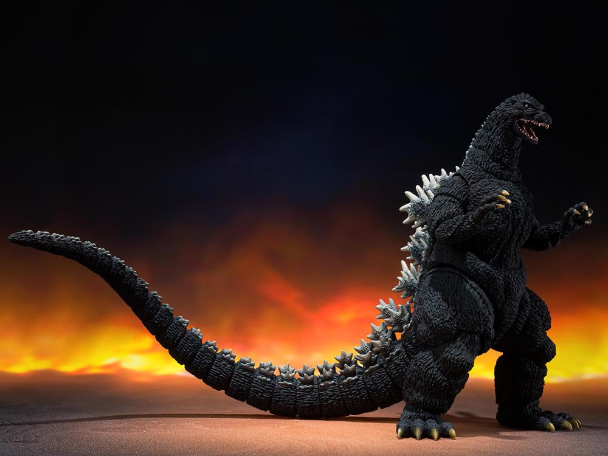

As a classic movie character, Godzilla has been through over 65 years on movie screen, this giant laser-shooting monster has become famous around the world.
With more than 10 different versions of this character and the title of "King Of The Monsters", the original one however, is born with Japanese's ruminate about war, pollution, and the side-effect of science. With the time pass, more thoughts and themes were added to this classic monster.
From Showa to Heisei, then Reiwa, Godzilla series never stopped its journey, and it has become the symbol of monster in many people's heart.
The reason why I'm introducing this to you, is because I believe passionate is able to ignite one's spark inside him.
Today I'm going to introduce its version in 1989, but as a toy.

Although as a bandai production, the art work on it is unambiguous. Producers did not bother on adding more details to it.The skin, claws, eyes, teeth, and his symbolic dorsal fin, every detail in the original movie can be seen on this toy. You can see his eyes clearly staring at you, with a row of white,shiny teeth in his mouth. Whoever play with this toy can fully taste the agressiveness of this monster.

Not only you can place it as a decoration in your room, you can also put other toys alongside, to rebuild classic scenes in the original movie.There are also lots of fun to play. Stop motion, photographs, film scenes...anything player imagine to do can be done with this toy. Someone can even film an cinematic shorts with it!